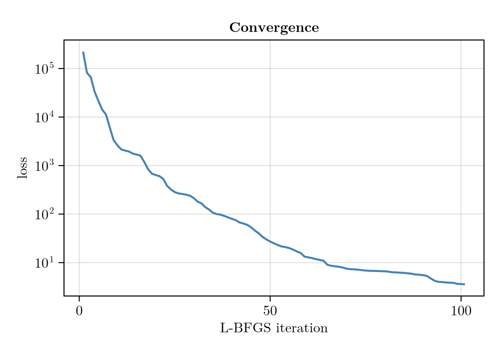
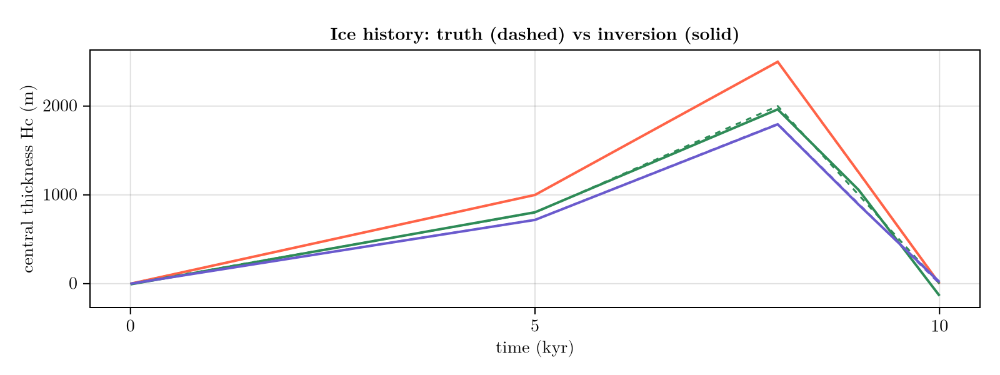
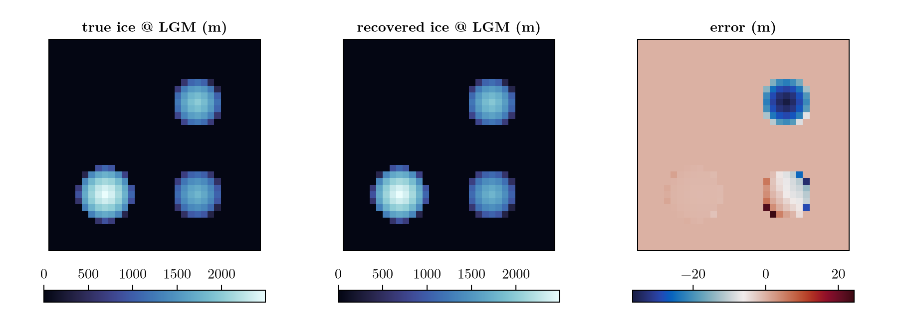

Inverse ice history
In Inverse calibration the ice history was known and only the solid Earth was unknown. Here we take the harder step, and the one glaciology usually faces: the ice-loading history is unknown too, and we reconstruct it jointly with the mantle viscosity from observations of the surface response. Machinery, optimizer and workflow are unchanged — what grows is the number and the nature of the unknowns, and with them the risk that different parameter combinations explain the same data equally well.
The unknowns are again wrapped in an encoding, this time a Test1Encoding, which parameterises both sides of the problem:
- three radially-symmetric Vialov ice domes whose central thicknesses
H_c(t)evolve over a glacial cycle (piecewise-linear between a few time knots) and whose centres are unknown, and - a laterally-variable mantle viscosity field: a background value plus two Gaussian anomalies (a schematic soft/stiff dichotomy).
Because the ice load is now part of the control vector, the problem is an IceLoadInversion rather than a ParameterInversion. Two further differences to the previous example are worth watching: the observations are sparse (~2 % of the grid cells) instead of full-field, and we therefore judge the result at the level of the reconstructed fields rather than of the individual parameters.
using FastIsostasy, CairoMakie, Optim
import Enzyme # loading Enzyme activates the AD extension;import (not using) avoids clashing its gradient! export with FastIsostasy's
using Random: randperm, seed!
using PrintfFixed configuration
Same setup as in the previous example: a 32×32 regional grid over a $6000 \, \mathrm{km} \times 6000 \, \mathrm{km}$ domain and a $10 \, \mathrm{kyr}$ glacial cycle defined by five time knots, placed asymmetrically so the rapid deglaciation at the end of the cycle is resolved. The cycle is again a stand-in for a realistic $\sim 100 \, \mathrm{kyr}$ one, compressed by a factor of ten to keep the docs build cheap (see the note in Inverse calibration).
The two fixed ingredients below — the dome radii and the viscosity-anomaly amplitudes — are not inverted for; holding a few of the more weakly constrained quantities fixed is a standard way to keep a joint inversion identifiable.
W, n = 3.0e6, 5
domain = RegionalDomain(W, n)
knot_times = [0.0, 5.0e3, 8.0e3, 9.0e3, 1.0e4] # nt = 5
nt = length(knot_times)
t_span = (0.0, 1.0e4)
radii = (0.8e6, 0.7e6, 0.7e6) # the three (fixed) Vialov dome radii
visc_amps = (-1.0, 1.0) # the two (fixed) log10-viscosity anomaly amplitudes(-1.0, 1.0)Parameter scaling
As before, the scale vector maps the dimensionless optimization variable to physical units (θ[i] * scale[i]) so that the optimizer stays well conditioned. The spread of magnitudes is even wider here than in the calibration example: ice thicknesses are thousands of metres, dome centres millions of metres, and log10(viscosity) is a number around 21.
scales = vcat(fill(2.0e3, 3*nt), # H_c(t) knots (≈ km)
fill(1.0e6, 6), # dome centres (≈ 1000 km)
1.0, # background log10 viscosity
fill(1.0e6, 6)) # viscosity-anomaly centres & widths
enc = Test1Encoding(knot_times, radii, visc_amps; scale = scales)Test1Encoding{Float64}([0.0, 5000.0, 8000.0, 9000.0, 10000.0], (800000.0, 700000.0, 700000.0), (-1.0, 1.0), [2000.0, 2000.0, 2000.0, 2000.0, 2000.0, 2000.0, 2000.0, 2000.0, 2000.0, 2000.0 … 1.0e6, 1.0e6, 1.0e6, 1.0, 1.0e6, 1.0e6, 1.0e6, 1.0e6, 1.0e6, 1.0e6])Ground truth
We define the true parameters in physical units and normalise them by scales to obtain the dimensionless θ_true the encoding expects. The three domes follow a glacial-cycle sawtooth: slow growth to a Last Glacial Maximum (LGM), then rapid retreat.
sawtooth(peak) = [0.0, 0.4, 1.0, 0.5, 0.0] .* peak # H_c at the five knots
Hc_phys = vcat(sawtooth(2.5e3), sawtooth(2.0e3), sawtooth(1.8e3))
centers_phys = [-1.3e6, -1.3e6, 1.3e6, 1.3e6, 1.3e6, -1.3e6]
visc_phys = [21.0, -1.0e6, -1.0e6, 8.0e5, 1.0e6, 1.0e6, 8.0e5]
θ_true = vcat(Hc_phys, centers_phys, visc_phys) ./ scales28-element Vector{Float64}:
0.0
0.5
1.25
0.625
0.0
0.0
0.4
1.0
0.5
0.0
⋮
1.3
-1.3
21.0
-1.0
-1.0
0.8
1.0
1.0
0.8The simulation template
Same AD requirements as before — the fixed-step EulerIntegrator and a SmoothTransition for the masks. The one structural difference is the ice interpolation: since the ice history is now an unknown, it is created with placeholder snapshots at exactly the encoding's knot times, and reconstruct! overwrites them with the Vialov domes at every iteration.
function build_sim()
it = TimeInterpolatedIceThickness(knot_times,
[zeros(domain) for _ in knot_times], domain)
bcs = BoundaryConditions(domain, ice_thickness = it)
se = SolidEarth(domain; lithosphere = LaterallyVariableLithosphere(),
layer_boundaries = [88.0e3], layer_viscosities = [1.0e21])
opts = SolverOptions(; show_progress = false, transition = SmoothTransition(10.0),
integ = EulerIntegrator(dt = 500.0))
nout = NativeOutput(t = Float64[], vars = Symbol[], T = Float64)
return Simulation(domain, bcs, RegionalSeaLevel(), se, t_span;
opts = opts, nout = nout)
end
sim = build_sim() Computation domain: RegionalDomain{Float64, Matrix{Float64}, Matrix{Float64}, CPU}
Physical constants: PhysicalConstants{Float64}
Problem BCs: BoundaryConditions{Float64, Matrix{Float64}, TimeInterpolatedIceThickness{Float64, Matrix{Float64}, TimeInterpolation2D{Float64, Matrix{Float64}}}}
Sea level: RegionalSeaLevel{LaterallyConstantSeaSurface, NoSealevelLoad, ConstantBSL{Float32, ReferenceBSL{Float32, TimeInterpolation0D{Float32}}}, InternalBSLUpdate, GoelzerVolumeContribution, NoAdjustmentContribution, GoelzerDensityContribution}
Solid Earth: SolidEarth{Float64, Matrix{Float64}, Matrix{Bool}, LaterallyVariableLithosphere, ViscousMantle, NoCalibration, CompressibleMantle, FreqDomainViscosityLumping, IncompressibleLithosphereColumn}
Solver options: SolverOptions{SmoothTransition{Float64}, EulerIntegrator{Float64}, ComplexFFTBackend}
GIATools: GIATools{ConvolutionPlanHelpers{Float64, Matrix{Float64}, Matrix{ComplexF64}, FFTW.rFFTWPlan{Float64, -1, false, 2, Tuple{Int64, Int64}}, FastIsostasy.NormalizedPlan{FFTW.rFFTWPlan{ComplexF64, 1, false, 2, UnitRange{Int64}}, 0.0002519526329050139}}, ConvolutionPlan{Matrix{Float64}, Matrix{ComplexF64}}, ConvolutionPlan{Matrix{Float64}, Matrix{ComplexF64}}, ConvolutionPlan{Matrix{Float64}, Matrix{ComplexF64}}, FastIsostasy.EmptyConvolution, FFTW.cFFTWPlan{ComplexF64, -1, false, 2, Tuple{Int64, Int64}}, FastIsostasy.NormalizedPlan{FFTW.cFFTWPlan{ComplexF64, 1, false, 2, UnitRange{Int64}}, 0.0009765625}, FastIsostasy.PreAllocated{Matrix{Float64}, Matrix{ComplexF64}, Array{ComplexF64, 3}}}
Reference state: ReferenceState{Float64, Matrix{Float64}, Matrix{Float64}}
Current state: CurrentState{Float64, Matrix{Float64}, Array{Float64, 3}, Matrix{Float64}}
Netcdf output: NetcdfOutput{Float32, PaddedOutputCrop}
Native output: NativeOutput{Float64}
native t_out: Float64[]
nc t_out: Float32[]
n simulated observables: 0
nx, ny: [32, 32]
dx, dy: [187500.0, 187500.0]
Wx, Wy: [3.0e6, 3.0e6]
extrema(effective viscosity): (1.171875e21, 1.171875e21)
extrema(lithospheric thickness): (88000.0, 88000.0)
Synthetic observations
Unlike the full-field data of the calibration example, here we observe the vertical bedrock uplift at only ~2 % of the grid cells, at ten times through the cycle — a more realistic, sparse dataset for a problem with more unknowns. As before, a single observable type is used per inversion (mixing types would make the observation container abstractly typed and break the AD compilation), and the data are generated by running the forward model at θ_true.
seed!(1234)
allidx = vec([CartesianIndex(i, j) for i in 4:29, j in 4:29])
pts = allidx[randperm(length(allidx))[1:24]]
obs_times = collect(1.0e3:1.0e3:1.0e4)
# run the forward model once at the truth to synthesise the "measured" data
obs0 = Observation(VerticalUpliftObservable(), pts, obs_times,
zeros(length(pts) * length(obs_times)); σ = 0.5)
prob_gt = IceLoadInversion(sim, enc, [obs0])
reconstruct!(sim, θ_true, enc)
preds = FastIsostasy.allocate_predictions(prob_gt)
FastIsostasy.forward_predict!(preds, prob_gt)
data = copy(preds[1])
obs = Observation(VerticalUpliftObservable(), pts, obs_times, data; σ = 0.5)
prob = IceLoadInversion(sim, enc, [obs])IceLoadInversion
Simulation t_span: (0.0, 10000.0)
Domain (nx, ny): (32, 32)
Encoding: Test1Encoding{Float64}
length(θ): 28
# observations: 1
Observable(s): DataType[VerticalUpliftObservable]
total data points: 240
extrema(extract_times): (1000.0, 10000.0)
# regularizations: 0
Diff mode: TangentMode
Loss model: DefaultLoss
By construction the loss vanishes at the truth:
@printf("loss(θ_true) = %.3e\n", loss(prob, θ_true))loss(θ_true) = 0.000e+00Checking the gradient
As in the previous example, we confirm the AD gradient of the loss against a finite-difference estimate before optimising. We perturb the truth to a well-informed initial guess θ0 (≈ 10 % off in the dimensionless variables) and compare a few components.
seed!(2)
θ0 = copy(θ_true)
θ0[1:3*nt] .+= 0.12 .* randn(3*nt) # ice-thickness knots
θ0[3*nt+1:3*nt+6] .+= 0.08 .* randn(6) # ice-dome centres
θ0[3*nt+7] += 0.15 * randn() # background viscosity
θ0[3*nt+8:end] .+= 0.08 .* randn(6) # viscosity anomalies
fd_dir(p, θ, e; ε = 1e-4) = (loss(p, θ .+ ε .* e) - loss(p, θ .- ε .* e)) / (2*ε)
g = similar(θ0)
FastIsostasy.gradient!(g, prob, θ0)
for i in (1, 3*nt + 1, 3*nt + 7)
e = zeros(length(θ0)); e[i] = 1.0
@printf("θ[%2d]: AD = % .4e FD = % .4e\n", i, g[i], fd_dir(prob, θ0, e))
end┌ Warning: Using fallback BLAS replacements for (["cblas_ddot64_"]), performance may be degraded
└ @ Enzyme.Compiler ~/.julia/packages/Enzyme/15yPJ/src/compiler.jl:5563
θ[ 1]: AD = -2.9608e+05 FD = -2.9608e+05
θ[16]: AD = 2.3573e+05 FD = 2.3573e+05
θ[22]: AD = 3.5243e+05 FD = 3.5243e+05Running the inversion
solve! minimises the loss with L-BFGS, using gradient! under the hood. Because we already work in dimensionless variables the default optimizer is well conditioned.
@printf("loss(θ0) = %.3e\n", loss(prob, θ0))
result = solve!(prob, θ0; optimizer = LBFGS(), iterations = 100,
store_trace = true)
θ_hat = Optim.minimizer(result)
@printf("loss(θ̂) = %.3e\n", loss(prob, θ_hat))loss(θ0) = 2.230e+05
┌ Warning: Using fallback BLAS replacements for (["cblas_ddot64_"]), performance may be degraded
└ @ Enzyme.Compiler ~/.julia/packages/Enzyme/15yPJ/src/compiler.jl:5563
loss(θ̂) = 3.564e+00The loss drops by several orders of magnitude:
fig = Figure(size = (500, 350))
ax = Axis(fig[1, 1], xlabel = "L-BFGS iteration", ylabel = "loss", yscale = log10,
title = "Convergence")
lines!(ax, Optim.f_trace(result), color = :steelblue, linewidth = 2)
fig
Recovering the ice history
The headline result is the reconstructed central-thickness curves H_c(t) of the three domes. Dashed lines are the truth, solid the inversion.
hc(θ, i) = (θ .* scales)[(i - 1) * nt + 1 : i * nt]
fig = Figure(size = (800, 300))
cols = [:tomato, :seagreen, :slateblue]
ax = Axis(fig[1, 1], xlabel = "time (kyr)", ylabel = "central thickness Hc (m)",
title = "Ice history: truth (dashed) vs inversion (solid)")
for i in 1:3
lines!(ax, knot_times ./ 1e3, hc(θ_true, i), color = cols[i], linestyle = :dash)
lines!(ax, knot_times ./ 1e3, hc(θ_hat, i), color = cols[i], linewidth = 2)
end
fig
Field-level recovery
Individual overlapping-dome parameters can trade off, so the physically meaningful check is the reconstructed fields. We compare the ice thickness at the LGM knot and the mantle-viscosity field.
reconstruct!(sim, θ_true, enc)
H_true = copy(FastIsostasy.ice_snapshots(sim)[3])
logη_true = log10.(copy(sim.solidearth.effective_viscosity))
reconstruct!(sim, θ_hat, enc)
H_hat = copy(FastIsostasy.ice_snapshots(sim)[3])
logη_hat = log10.(copy(sim.solidearth.effective_viscosity))
@printf("ice @ LGM: max|ΔH| = %.1f m (peak %.0f m)\n",
maximum(abs.(H_hat .- H_true)), maximum(H_true))
@printf("log10 viscosity: max|Δ| = %.4f decades\n",
maximum(abs.(logη_hat .- logη_true)))ice @ LGM: max|ΔH| = 36.7 m (peak 2494 m)
log10 viscosity: max|Δ| = 0.0169 decadesx = domain.x ./ 1e3
fig = Figure(size = (900, 320))
for (j, (Z, ttl, cmap)) in enumerate((
(H_true, "true ice @ LGM (m)", :ice),
(H_hat, "recovered ice @ LGM (m)", :ice),
(H_hat .- H_true, "error (m)", :balance)))
ax = Axis(fig[1, j], aspect = DataAspect(), title = ttl)
hidedecorations!(ax)
hm = heatmap!(ax, x, x, Z, colormap = cmap)
Colorbar(fig[2, j], hm, vertical = false, width = Relative(0.8))
end
fig
The ice-thickness field is recovered to within a few percent of its peak, and the viscosity field to a few hundredths of a decade — even though the sparse surface data only weakly constrains the exact location of the viscosity anomalies. This is the expected behaviour of GIA inversions: the solid Earth acts as a spatial low-pass filter on the load, so integrated quantities (the loading history, the smoothed fields) are well determined while fine placement is not.
Copy-pastable code
using FastIsostasy, CairoMakie, Optim, Printf
import Enzyme # loading Enzyme activates the AD extension
using Random: seed!, randperm
W, n = 3.0e6, 5
domain = RegionalDomain(W, n)
# 10 kyr toy cycle: scale knot_times, t_span and obs_times by 10 for a
# realistic ~100 kyr one (10x the forward and, if used, adjoint cost)
knot_times = [0.0, 5.0e3, 8.0e3, 9.0e3, 1.0e4]
nt, t_span = length(knot_times), (0.0, 1.0e4)
# encoding: 3 Vialov domes + a viscosity field, all scaled to O(1)
scales = vcat(fill(2.0e3, 3nt), fill(1.0e6, 6), 1.0, fill(1.0e6, 6))
enc = Test1Encoding(knot_times, (0.8e6, 0.7e6, 0.7e6), (-1.0, 1.0); scale = scales)
sawtooth(peak) = [0.0, 0.4, 1.0, 0.5, 0.0] .* peak
theta_true = vcat(sawtooth(2.5e3), sawtooth(2.0e3), sawtooth(1.8e3),
[-1.3e6, -1.3e6, 1.3e6, 1.3e6, 1.3e6, -1.3e6],
[21.0, -1.0e6, -1.0e6, 8.0e5, 1.0e6, 1.0e6, 8.0e5]) ./ scales
# forward template: fixed step + smooth masks are both required for AD
it = TimeInterpolatedIceThickness(knot_times,
[zeros(domain) for _ in knot_times], domain)
bcs = BoundaryConditions(domain, ice_thickness = it)
se = SolidEarth(domain; lithosphere = LaterallyVariableLithosphere(),
layer_boundaries = [88.0e3], layer_viscosities = [1.0e21])
opts = SolverOptions(; show_progress = false, transition = SmoothTransition(10.0),
integ = EulerIntegrator(dt = 500.0))
nout = NativeOutput(t = Float64[], vars = Symbol[], T = Float64)
sim = Simulation(domain, bcs, RegionalSeaLevel(), se, t_span;
opts = opts, nout = nout)
# synthesise "measurements" by running the forward model at the truth
seed!(1234)
allidx = vec([CartesianIndex(i, j) for i in 4:29, j in 4:29])
pts = allidx[randperm(length(allidx))[1:24]]
obs_times = collect(1.0e3:1.0e3:1.0e4)
obs0 = Observation(VerticalUpliftObservable(), pts, obs_times,
zeros(length(pts) * length(obs_times)); σ = 0.5)
prob_gt = IceLoadInversion(sim, enc, [obs0])
reconstruct!(sim, theta_true, enc)
preds = FastIsostasy.allocate_predictions(prob_gt)
FastIsostasy.forward_predict!(preds, prob_gt)
obs = Observation(VerticalUpliftObservable(), pts, obs_times, copy(preds[1]); σ = 0.5)
prob = IceLoadInversion(sim, enc, [obs])
# invert from a perturbed start (forward-mode AD: cost grows with nθ)
seed!(2)
theta0 = theta_true .+ 0.1 .* randn(length(theta_true))
result = solve!(prob, theta0; optimizer = LBFGS(), iterations = 100,
store_trace = true)
theta_hat = Optim.minimizer(result)
@printf("loss: %.3e -> %.3e\n", loss(prob, theta0), loss(prob, theta_hat))